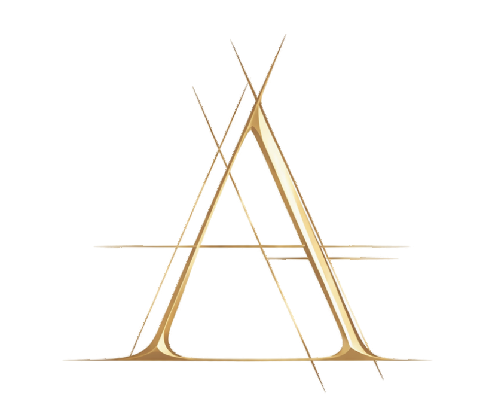

Founder, Big Sister OS
AI operations for small-business owner-operators: commitment tracking and operations guidance with human-in-the-loop guardrails. Launched 2026; in market with paying subscribers.

CURRICULUM VITAE
Designing what endures.Founder, community activator, and a curious strategy-and-operations mind, drawn to the ideas and plans that actually get built and clear-eyed about what they cost. I work through influence rather than authority, turning engagement into action. Mission-locked to human potential: putting emerging technology to work so people get back their time, their attention, and the room to thrive. Trained first as a conceptual artist, later in business strategy, marketing, and management, with deep roots in fine art and interior design.
AI operations for small-business owner-operators: commitment tracking and operations guidance with human-in-the-loop guardrails. Launched 2026; in market with paying subscribers.
An evergreen company builder on steward-ownership principles, applying deep science to climate. Leads venture-building operations and raise execution.
Women-owned interior design firm in Chapel Hill, North Carolina, doing full builds, renovations, and interiors. Est. 1950.
Led annual planning and project portfolio management, developing and tracking business and corporate unit goals in alignment with strategic objectives and corporate vision.
Aligned a department of 50 to execute strategic priorities across communications, web, creative services, client services, and research. Worked fully remote from 2012, traveling to New York six to ten times a year, and drew on that decade of distributed-work practice to help colleagues transition during the pandemic.
Led strategic development and execution across creative services, web content, research and data, marketing and sales, and regional representative teams. Served on the design and communication-strategy team for revisions to the century-old Clergy Pension Plan; built the Learning Loop client-research program combining data analysis, surveys, focus groups, and interviews.
Managed interdepartmental operations and communications initiatives under the Chief Communications Officer, including nationwide client-roster rollouts, internal brand engagement, and listening events pairing clients with the CEO.
Core PMO team member managing projects across communications, marketing, client engagement, and web content, including the Promise to the Client brand positioning.
Marketing for the launch of an individual life insurance offering: direct, email, and web content; lead-generation restructuring; CRM reporting.
Marketing, events, and conference design with Anheuser-Busch as primary client, including the annual sales conference, early website development, and interactive mobile marketing units.
Early years in the family interior design practice, on client projects and interiors work, with small design projects ongoing in the years since.
Fifteen years of customer service and sales: front-of-house work through school and studio years, including the Kimpton Group's Ponzu at San Francisco's Serrano Hotel and Stephen Starr's Morimoto in New York.
Led the group for several years, facilitating discussions with more than fifty women, including the Choosing Brave Over Perfect series, developed with Susie Caldwell.
Won a contested primary to become the nominee, running to be the county's first female mayor, and earned nearly 40% of the general-election vote (more than 22,000 votes) against a two-term incumbent. Centered the campaign on schools, infrastructure, government transparency, and ending private operation of the county jail at Silverdale, one of America's first privatized correctional facilities; two years later, the county returned Silverdale to public operation. Campaigned while serving full time at Church Pension Group.
Including Finance for Non-Financial Managers, Managing Performance, and Effective Communication. Further project management training through The George Washington University (ESI International) and the International Institute for Learning.
Exhibited and performed as Aloyse Blair.